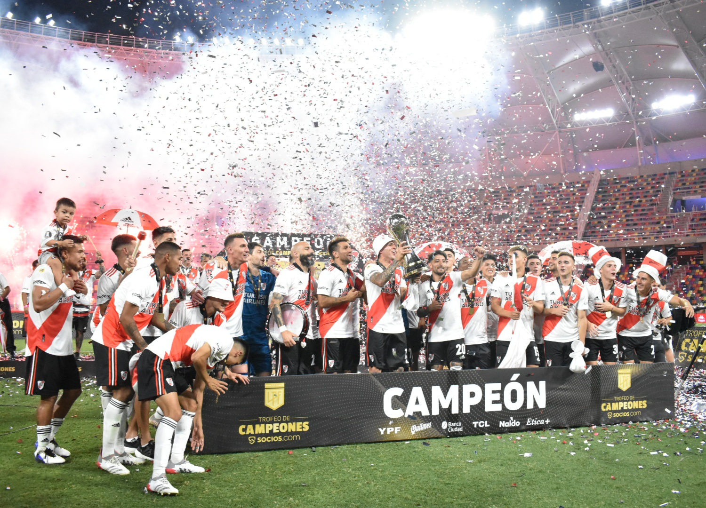

Primera División Del Futbol Argenitno
La Primera División del fútbol argentino, también conocida como "Liga Argentina de Fútbol", se creó en 1891, convirtiéndose en una de las ligas de fútbol más antiguas del mundo. La Asociación del Fútbol Argentino (AFA) fue fundada en 1893, y desde entonces ha sido el organismo rector del fútbol en Argentina. La Primera División ha sido la máxima categoría del fútbol argentino, donde compiten los clubes más importantes del país, y ha sido escenario de grandes rivalidades y emocionantes partidos a lo largo de su historia.
Algunos de sus ganadores fueron

River Plate 2023
Boca Juniors 2022